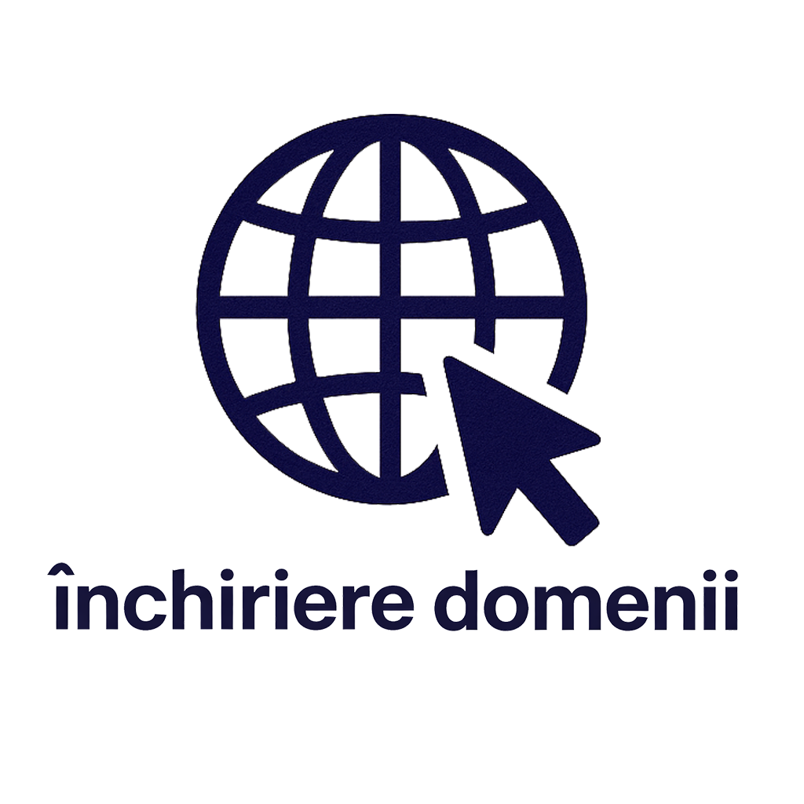

Platformele și instrumentele de care ai nevoie pentru a naviga cu succes prin anii de facultate la CTI.
Platforma principală de e-learning. Aici vei găsi suporturile de curs, laboratoarele, vei încărca temele și vei susține o parte dintre teste/examene. Fiecare materie are propria ei secțiune gestionată de profesorul titular.
Portalul MOPAS este esențial pentru gestionarea situației tale școlare. Aici îți poți vedea notele oficiale, situația financiară (dacă ești la taxă) și alte aviziere administrative publicate de Secretariat.
Portalul facultății cu fișele disciplinelor (Syllabus). Este foarte util pentru a vedea cerințele de evaluare, bibliografia recomandată și obiectivele fiecărei materii înainte de a începe semestrul.

Pentru studenții care au de dezvoltat proiecte (ex: aplicații web, API-uri), facultatea poate oferi infrastructură și subdomenii pentru testare și prezentare.